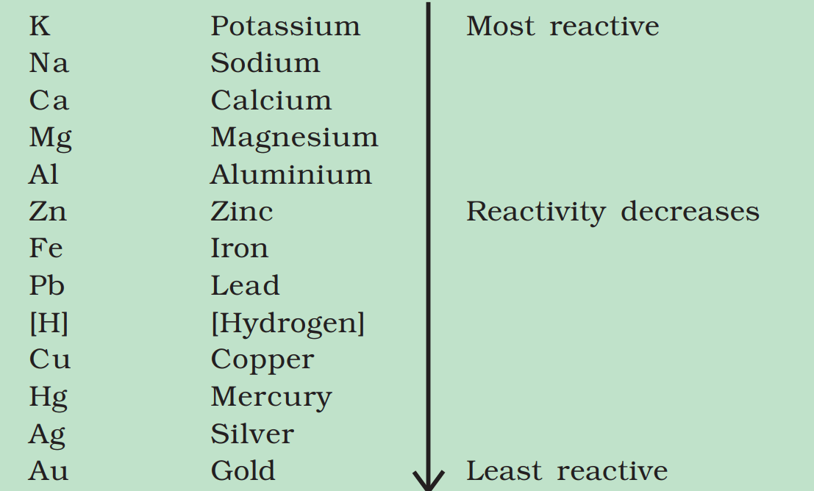
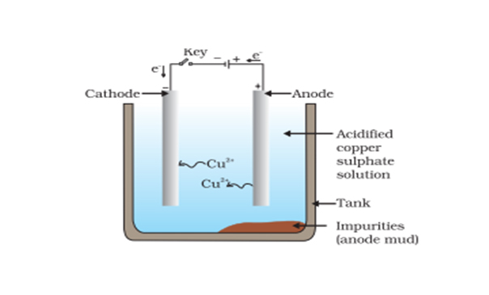

Metals and Non-Metals
Class 10 Science | Chapter 3 | Complete NCERT
Coverage
Elements: All 118 elements are classified into metals, non-metals, and metalloids. This
chapter covers their physical/chemical properties, reactions, and applications.
1. Physical Properties
2. Chemical Properties of Metals
2.1 Reaction with Oxygen
4Na + O2 → 2Na2O (Sodium oxide)
2Mg + O2 → 2MgO (Magnesium oxide)
Note: Metal oxides are basic (turn red litmus blue). Exceptions:
Al2O3, ZnO (amphoteric).
2.2 Reaction with Water
| Metal |
Reactivity |
Reaction |
| Potassium (K) |
Violent |
2K + 2H2O → 2KOH + H2↑ |
| Iron (Fe) |
Slow (with steam) |
3Fe + 4H2O → Fe3O4 + 4H2↑ |
| Copper (Cu) |
No reaction |
- |
2.3 Reaction with Acids
Zn + 2HCl → ZnCl2 + H2↑
Exception: Cu, Hg, Ag do not react with dilute acids (below H in reactivity series).
3. Reactivity Series

Key Rules:
- Metals above H displace H2 from acids.
- Higher metals can displace lower metals from compounds (Displacement reactions).
- Top metals (K, Na, Ca) extracted via electrolysis.
4. Extraction of Metals
| Process |
Ore Type |
Example |
| Electrolysis |
Oxides/Chlorides of K, Na, Ca, Al |
2Al2O3 → 4Al + 3O2 (Hall-Héroult process) |
| Reduction with Carbon |
Oxides of Zn, Fe, Pb |
ZnO + C → Zn + CO |
| Roasting/Calcination |
Sulphides/Carbonates |
2ZnS + 3O2 → 2ZnO + 2SO2 |
5. Corrosion and Prevention
4Fe + 3O2 + xH2O → 2Fe2O3·xH2O (Rust)
Prevention Methods:
- Galvanization: Coating with Zn (e.g., iron pipes).
- Alloying: Mixing with other metals (e.g., Stainless steel: Fe + Cr + Ni).
- Painting/Oiling: Creates barrier to O2 and moisture.
6. NCERT Practice Questions
- Why is sodium stored in kerosene?
- Write the chemical formula of rust.
- Which gas is produced when metals react with acids?
Answers:
1. To prevent reaction with O2/H2O (highly reactive).
2. Fe2O3·xH2O.
3. Hydrogen (H2).
1. Refining of Metals
Refining: Process of purifying impure metals obtained after extraction (especially for
metals like Cu, Zn, Ag).
Electrolytic Refining (Most Common Method)
Example: Refining of Copper

Process:
- Anode: Impure copper (contains Fe, Zn, Ag as impurities)
- Cathode: Pure copper strip
- Electrolyte: Acidified copper sulphate (CuSO4 +
H2SO4)
At Anode: Cu → Cu2+ + 2e- (Oxidation)
At Cathode: Cu2+ + 2e- → Cu (Reduction)
Result: Pure copper deposits on cathode. Impurities settle as anode mud
(contains Ag, Au).
| Metal |
Refining Method |
Key Points |
| Copper (Cu) |
Electrolytic |
Anode mud contains precious metals (Ag, Au) |
| Aluminium (Al) |
Hoope's Process |
Uses cryolite (Na3AlF6) as electrolyte |
| Gold (Au) |
Cupellation |
Removes Pb impurities by oxidation |
2. Corrosion
Corrosion: Gradual destruction of metals by chemical reaction with environment
(O2, H2O, CO2).
Examples of Corrosion
Iron (Rusting): 4Fe + 3O2 + xH2O →
2Fe2O3·xH2O
Copper (Green patina): 2Cu + H2O + CO2 + O2 →
CuCO3·Cu(OH)2
Silver (Tarnishing): 4Ag + 2H2S + O2 → 2Ag2S + 2H2O
Factors Accelerating Corrosion
- Presence of moisture and electrolytes (salt water)
- Acidic pollutants (SO2, CO2)
- Higher temperature
- Contact with more reactive metals (galvanic corrosion)
Prevention Methods
| Method |
How it Works |
Examples |
| Galvanization |
Coating with zinc (Zn sacrifices itself) |
Iron pipes, buckets |
| Alloying |
Mixing with corrosion-resistant metals |
Stainless steel (Fe+Cr+Ni) |
| Painting/Oiling |
Creates barrier against O2/H2O |
Car bodies, ships |
| Sacrificial Protection |
Attaching more reactive metal (Mg, Zn) |
Underground pipes, ship hulls |
Did You Know? The Statue of Liberty's green color is due to corrosion of its copper
surface forming patina (CuCO3·Cu(OH)2), which actually protects the underlying
metal!
3. NCERT Practice Questions
- Why is electrolytic refining used for copper?
- Write the chemical reaction of iron rusting.
- How does galvanization prevent corrosion?
Answers:
1. To obtain 99.9% pure Cu and recover precious metals (Ag, Au) from anode mud.
2. 4Fe + 3O2 + xH2O → 2Fe2O3·xH2O
3. Zn coating reacts first (sacrificial protection) and forms a protective layer of
ZnCO3.